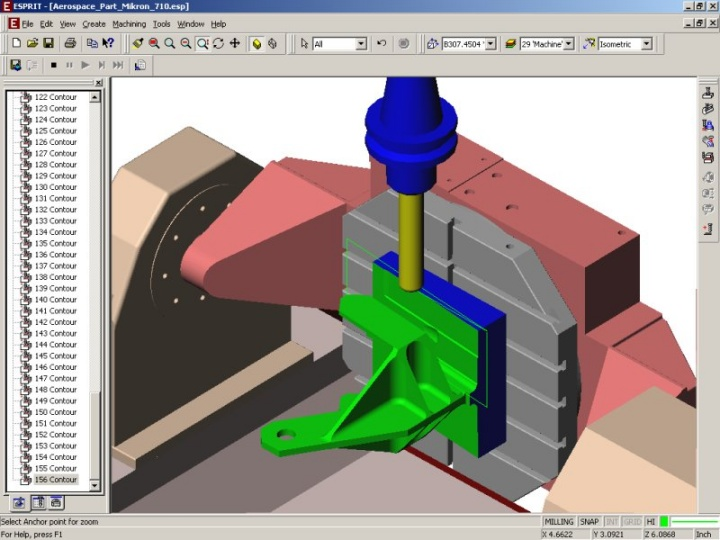
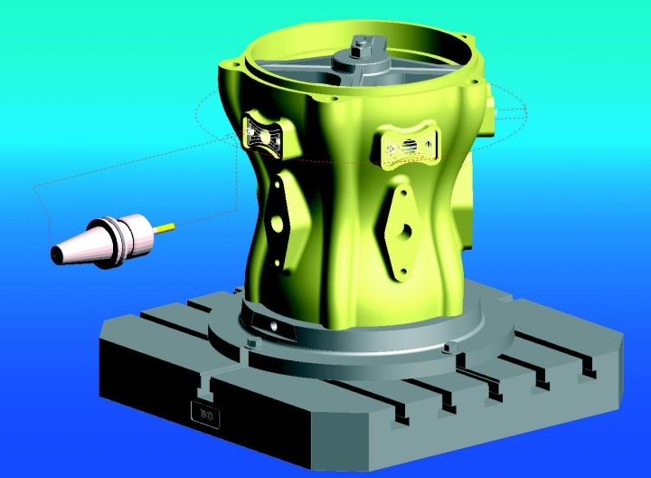

|
Levent Yaðmur
Mak. Y. Müh.
TÜBÝTAK UME
Gebze, Ocak 2006
Not: Orijinal olarak TurkCADCAM.net Dergisi 2. Sayýsý için hazýrlanmýþ bu makale, Mayýs 2007'de TurkCADCAM.net Portalý'nda yayýnlanmýþtýr.
Giriþ:
CAD/CAM ve PLM konusunda danýþmanlýk, araþtýrma ve eðitim hizmetleri veren ABD tabanlý CIMdata firmasýnýn yýllýk anketinde, CAM yazýlým tedarikçi firmalarýndan en önemli üç teknolojik eðilimi sýralamalarý istendi. Sonuçlar, pazarýn durumunu ortaya koyan 225 sayfalýk CIMdata Yýllýk Pazar Denetleme Raporu'nda yayýnlandý. CAM sektörünün içindeki bu tedarikçi firmalara göre, gelecekte öne çýkacak konu ve alanlar aþaðýda önem sýrasýna göre kýsaca özetlenmiþtir:
Daha fazla hareket ekseni (multi-axis) ve çok fonksiyonlu (multifunctional) iþleme:
Çok yönlü (multi-configuration) takým tezgahlarýnýn daha fazla kullanýmýna doðru açýk bir eðilim var. Tezgahlarýn, çok fonksiyonluluk, çok milli, çok magazinli/taretli (multi-turret) ve çok eksenlilik yönleriyle kompleksliði artmaktadýr. 12 veya daha fazla eksene sahip torna tezgahlarý imal edilmeye baþlanmýþ, hatta 4 eksen torna tezgahlarýnýn ve tornalama/ frezeleme tezgahlarýnýn kullanýmý sýradan bir hale gelmiþtir. Frezeleme kabiliyeti bazý iþleme merkezleriyle kýyas edilebilirdir. Önceleri birçok tornalama ve frezeleme tezgahý gerektiren parçalar artýk, tek bir tezgahta üretilebilmektedir. Bu durum, tezgahýn etkin kullanýmý için geliþmiþ yazýlýmý ayrýca yeni takýmlarýn tahriki için yeni postprosesörleri [1] gerektirmektedir.
5-eksen iþlemenin artmasý:
Birbirlerine dik 3 eksenin (x, y ve z) ve 2 dönme eksenin ayný anda hareket edebildiði iþleme merkezleri, 5-eksen tezgahlar [2] olarak adlandýrýlmaktadýr. Ýþlemenin bu türü, önceden beri havacýlýk sektöründe bazý parçalarýn ve þimdilerde kalýp [3] imalatýnda sýklýkla kullanýlmaktadýr. 5-eksen tezgahlar pahalýlýklarý ve programlanmasýnýn zor oluþlarýyla ün kazanmýþtýr. Ancak, 100,000 $'dan 200,000 $'a kadar uzanan fiyat aralýðý ve yazýlýmýnýn öðrenilmesi/çalýþtýrýlmasýnýn kolaylýðý ile bu tezgahlarýn kullanýmý gün geçtikçe yaygýnlaþmaktadýr.

Yüksek hýzlý iþlemenin (High-speed cutting) yaygýnlaþmasý:
Þu sýralar bir çok kalýp atelyesi yüksek hýzlý iþlemeyi gerçekleþtirmektedir. Bu teknolojiyi destekleyen tezgah ve yazýlýmlarý aþaðýdaki özellikleri saðlamalýdýr.
- Verinin hýzlý ve etkin transferine imkan tanýmalýdýr,
- Herhangi bir ani yön deðiþikliðini azaltmak için doðru takým hareketine imkan tanýmalýdýr,
- Kesici takým ömrünü en yüksek seviyede tutmak için sabit bir talaþ kalýnlýðýný gerçekleþtirebilmelidir,
- Ýstenmeyen kesimlerden uzak, yüksek seviyedeki bitmiþ yüzeyler elde edilebilmelidir.
Ýþlenecek yüzeyler takýma teðetsel olmalý, boþluksuz ve üst üste binmelerden kaçýnýlmalýdýr. Bazen, çok daha iyi sonuçlarýn elde edilmesi amacýyla, ikili veya ASCII formatýnda [4] modellenmiþ yüzeylere ters olarak, gerçek yüzeylerde iþleme gerçekleþtirilir. Ancak yüksek hýzlý iþlemede bazen, parçadaki yüksek sýcaklýk artýþý ve oluþan çatlaklar nedeniyle kalite problemleri ortaya çýkabilmektedir. Bununla birlikte artýk, yüksek hýzlý kesme imalatçýlar için zorunlu hale gelmekte ve tüm CAM yazýlým üreticileri endüstrinin bu ihtiyacýný karþýlayacak teknolojileri destekleyecek program paketlerini saðlamaktadýrlar.
Daha ileri otomasyon ve Bilgi Tabanlý Ýþlemenin (knowledge-based machining) artmasý:
Her CAM yazýlýmý daha fazla otomasyona yönelik olarak geliþmektedir. Bilgi Tabanlý Ýþlemenin (BTÝ) kullanýmý yarý otomatik ve otomatik takým yolu oluþturma iþleminin yerine getirilmesinde etken ve ana teknoloji olmuþtur.
BTÝ'nin uygulanmasýndaki iki tane birincil teknoloji; "adaptif" ve/veya "generatif" olarak adlandýrýlabilir. Ýlave olarak, bir BTÝ süreci özellik tabanlý veya parça tabanlý olabilir. Özellik tabanlý iþleme gerçekleþtirildiðinde, otomatik özellik tanýma yazýlýmý modeli incelemek, hangi özellikler olduðunun tespiti ve sonradan gelecek süreç özeliklerinin tanýmlanmasý için kullanýlabilir.
Katý Tabanlý Ýþlemenin (solid-based machining) artmasý:
KTÝ þu sýralarda oldukça yaygýnlaþmýþtýr. Katý modellerle dikiþsiz birlikte iþlerlik meydana gelmiþtir. Ýþleme sýk sýk doðrudan katý model üzerine gerçekleþtirilir. KTÝ sisteminin üç ana elemaný aþaðýdaki gibidir:
- Bir katý modelleme sistemi
- Modeldeki verinin CAM sistemine bir çeviri olmadan aktarýlabilme imkaný
- Doðal bilgi alma ve katý modelle fonksiyonellik kullanan bir CAM sistemi
Çoðu yazýlým firmasý ikili veya ASCII formatýnda oluþturulmuþ katýlar veya yüzeyler üzerindeki iþlemeyi desteklemekte, katý ve yüzey tanýmlamalarý ayný hibrid modelle birbirine karýþtýrýlabilmektedir.
3+2 eksenli iþlemenin artmasý:
5 eksen konumlandýrmada (3+2 iþleme olarak da bilinir) iþ parçalarýnýn farklý açýlarda konumlandýrýlmasý amacýyla 2 adet açýlý dönmenin 3 eksen iþleme merkezine eklenmiþtir. Bir kere konumlandýrma yapýldýðýnda, iþ parçalarý 3 eksen modda kesme iþlemine tabi tutulur. Bu tür iþleme tam 5 eksen frezelemenin tüm yararlarýný saðlar ve 3 eksen ya da tam 5 eksen iþlemeye göre alternatif yaklaþýmlar sunar.
Bu tür iþleme, özellikle derin boþluklarýn veya kalýplardaki derin sürekli kýsýmlarýn kesilmesinde önemlidir. Yazýlým bazen takýmýn açýsýný (tilt angle of the tool) optimize eder. Kullanýcý maksimum eðim açýsýný tanýmlar, fakat spesifik eðim açýlarýný tanýmlamasý gerekmez. Yazýlým, kesici takýmýn eðiminin gerekli olduðu yerleri bulur ve parça kenarýna çarpýlmamasý amacýyla gerekli minimum açýyý hesaplar. Yazýlým bu açýyý, çarpma gerçekleþme durumu ortaya çýkana kadar koruyacaktýr. Bu noktada, yazýlým çarpmayý önlemek amacýyla kesici takým açýsýný deðiþtirecektir. Eðer eðim gerektirmeyen bir durumla karþýlaþýlýrsa yazýlým, takýmýn tekrar normal konumuna veya düþük eðim pozisyonuna döndürecektir. Takýmýn tüm tekrar konumlandýrma iþlemleri minimum eðim açýsýnda otomatik olarak gerçekleþtirilir. Bu sürecin takým yolu, 5 eksen takým yoluna (tool path) benzer olacaktýr. Bu teknik, kalýp iþlemede gittikçe yaygýnlaþmaktadýr.
Süreç odaklý otomasyon (process-focused automation):
Yazýlým, temel aþamadan tam süreç otomasyona kadar geliþmektedir. Bir süreç odaklý yaklaþým, özel kullanýcý isteklerinin tümünü karþýlayabilecektir. Örneðin; yazýlýmýn kullanýcýyý yönlendirdiði modülleri, elektrot ve montaj oluþturma iþlemleri gibi süreçler için kullanýlabilirler. Yazýlým firmalarýnýn büyük bir bölümü tasarým ve progresif kalýplarýn kesimi için uygulama takýmlarý sunmaktadýr. Takým tezgahý, kontrol edici, takým yolu oluþturucu ve postprosesörleri içeren tam 5 eksen süreçler, rotorlar, türbin kanatlarý ve parçalarý, tüpler, borular, tekerlek lastik kalýplarý, havacýlýk parçalarý, kalýp ve parçalarýndaki derin boþluklar gibi karmaþýk parçalarýn freze ile iþlenmesi için bazý yazýlým firmalarý tarafýndan saðlanmaktadýr. Yazýlým, sürecin geliþtirilmesi için genellikle isteklere göre ayarlanabilir.

Daha gerçekçi simülasyonlar:
Ýþleme simülasyonu, takým yolu doðrulama (toolpath verification), modele malzeme uygulama (rendering) gibi iþlemler için yazýlýmda önemli geliþtirmeler yapýlmýþtýr. Takým tezgahýný, tutucularý, makine parçalarýný, kesme takýmlarýný ve iþlenecek parçayý da içeren tüm iþleme sürecinin gerçekçi simülasyonu yapýlabilir. Takým yolunun simülasyonu onun doðruluðunun kontrol edilmesi için gerçekleþtirilir. Hatalý kesimler (gouges), alttan kesilmeler (undercuts) ve hedef parça ile iþlenen parça arasýndaki her türlü uyumsuzluklar gösterilir. Kullanýcýlar süreçteki modelle tasarlanan iþ parçasýný karþýlaþtýrabilirler. Modele malzeme uygulama yazýlýmý, iþlenmiþ parçanýn fotogerçekçi (photorealistic) resimlerin elde edilmesini saðlar.
Dip Notlar:
[1] Postprosesör (postprocessor): CAM yazýlýmýnýn CNC tezgahýna uygun kodlar haline getirilmesinde kullanýlan arayüz program parçacýðý.
[2] Bu tabirle, ayný anda 5 eksenin de hareket edebildiði "full contouring" tezgahlar kastediliyor.
[3] Plastik enjeksiyon, dövme ve döküm kalýpçýlýðýnýn tümü ifade edilmektedir.
[4]
Ýngilizce "Tessellated solid and surface" olarak ifade edilen bu modeller VRML veya STL formatýnda olabilir.
Kaynak:
Bu yazý, Alan Christman'ýn MMS Online'da yayýnlanan "CAD/CAM Outlook; Technology Trends In CAM Software" adlý makalesi esas alýnarak hazýrlanmýþtýr. Orijinal metne þu linkten ulaþabilirsiniz: www.mmsonline.com/articles/1205cad.html |